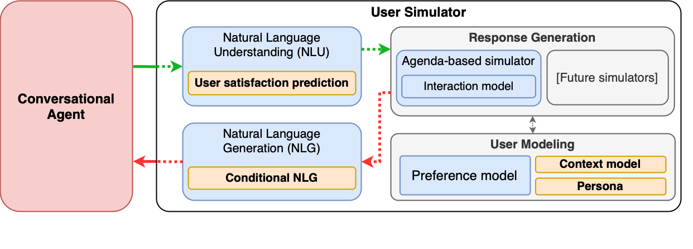

Main Components¶
{kind=link}

Natural language understanding (NLU)¶
The NLU is responsible for obtaining a structured representation of text utterances. This entails intent classification and entity recognition. In addition to this, the NLU can also do satisfaction prediction. This is the users satisfaction with the agents response.
Response generation¶
Response generation is currently developed with an agenda-based simulator [Schatzmann et al., 2007] in mind, however, it could be replaced with other approaches in the future. Following Zhang and Balog, 2020, response generation is based on an interaction model, which is responsible for initializing the agenda and updating it. Updates to the agenda can be summarized as follows: if the agent responds in an expected manner, the interaction model pulls the next action off the agenda; otherwise, it either repeats the same action as the previous turn or samples a new action. More details on the agenda-based simulator can be found here. Additionally, motivated by recent work in [Salle et al., 2021] and [Sun et al., 2021], we also introduce a user satisfaction prediction component. In addition to deciding which action to take next, the generated response also includes a turn-level user satisfaction estimate. This may be utilized by the NLG component when generating the text of the user utterance.
User modeling¶
User modeling consists of three sub-components: preference model, context model, and persona.
Preference model¶
Preference modeling refers to modeling users’ individual tastes and allows for a personalized experience. We model preferences as a Personal Knowledge Graph (PKG), where nodes can be either items or attributes. The preference model is built such that it remains consistent across simulations.
Context model¶
In addition to preference and interaction modeling, we also model other user contexts, specifically temporal and relational. Temporal context refers to time context such as time of the day and whether it is a weekday or weekend. Relational context on the other hand is used to indicate the group setting of the user.
Persona¶
Persona is used to capture user-specific traits, e.g., cooperativeness.
Natural language generation (NLG)¶
Following the work in [Zhang and Balog, 2020], the NLG component is template-based, that is, given the output of the response generation module, a fitting textual response is chosen and may be instantiated with preferences. Additionally, we extend template-based generation to be conditioned with metadata, specifically on user satisfaction, such that users could use for example stronger language when getting dissatisfied with the system.
References
Alexandre Salle, Shervin Malmasi, Oleg Rokhlenko, and Eugene Agichtein. 2021. Studying the Effectiveness of Conversational Search Refinement Through User Simulation. In Proceedings of the 43rd European Conference on IR Research (ECIR ‘21). 587–602.
Jost Schatzmann, Blaise Thomson, Karl Weilhammer, Hui Ye, and Steve Young. 2007. Agenda-Based User Simulation for Bootstrapping a POMDP Dialogue System. In Human Language Technologies 2007: The Conference of the North American Chapter of the Association for Computational Linguistics; Companion Volume, Short Papers (NAACL ‘07).
Weiwei Sun, Shuo Zhang, Krisztian Balog, Zhaochun Ren, Pengjie Ren, Zhumin Chen, and Maarten de Rijke. 2021. Simulating User Satisfaction for the Evaluation of Task-Oriented Dialogue Systems. In Proceedings of the 44th International ACM SIGIR Conference on Research and Development in Information Retrieval (SIGIR ‘21). 2499–2506.
Shuo Zhang and Krisztian Balog. 2020. Evaluating Conversational Recommender Systems via User Simulation. In Proceedings of the 26th ACM SIGKDD International Conference on Knowledge Discovery & Data Mining (KDD ‘20). 1512–1520.